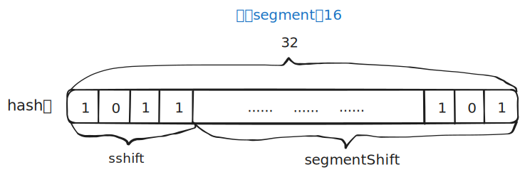
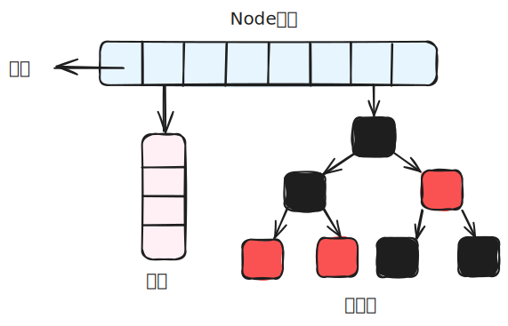

1. ConcurrentHashMap 1.7
1.1 存储结构

ConcurrentHashMap由很多个Segment组成，每一个Segment是一个类似于HashMap的结构，所以每一个HashMap的内部可以进行扩容。但是Segment的个数一旦初始化就不能改变，默认Segment的个数是16个，也就意味着ConcurrentHashMap默认支持最多16个线程并发。
1.2 初始化
无参构造
/**
* Creates a new, empty map with a default initial capacity (16),
* load factor (0.75) and concurrencyLevel (16).
*/
public ConcurrentHashMap() {
this(DEFAULT_INITIAL_CAPACITY, DEFAULT_LOAD_FACTOR, DEFAULT_CONCURRENCY_LEVEL);
}有参构造
- 无参构造中调用了有参构造，传入了三个默认参数：
/** * 默认初始化容量 */ static final int DEFAULT_INITIAL_CAPACITY = 16; /** * 默认负载因子 */ static final float DEFAULT_LOAD_FACTOR = 0.75f; /** * 默认并发级别 */ static final int DEFAULT_CONCURRENCY_LEVEL = 16; - 有参构造的内部实现：
@SuppressWarnings("unchecked") public ConcurrentHashMap(int initialCapacity,float loadFactor, int concurrencyLevel) { // 参数校验 if (!(loadFactor > 0) || initialCapacity < 0 || concurrencyLevel <= 0) throw new IllegalArgumentException(); // 校验并发级别大小，大于 1<<16，重置为 65536 if (concurrencyLevel > MAX_SEGMENTS) concurrencyLevel = MAX_SEGMENTS; // Find power-of-two sizes best matching arguments // 2的多少次方 int sshift = 0; int ssize = 1; // 这个循环可以找到 concurrencyLevel 之上最近的 2的次方值 while (ssize < concurrencyLevel) { ++sshift; ssize <<= 1; } // 记录段偏移量 this.segmentShift = 32 - sshift; // 记录段掩码 this.segmentMask = ssize - 1; // 设置容量 if (initialCapacity > MAXIMUM_CAPACITY) initialCapacity = MAXIMUM_CAPACITY; // c = 容量 / ssize ，默认 16 / 16 = 1，这里是计算每个 Segment 中的类似于 HashMap 的容量 int c = initialCapacity / ssize; if (c * ssize < initialCapacity) ++c; int cap = MIN_SEGMENT_TABLE_CAPACITY; //Segment 中的类似于 HashMap 的容量至少是2或者2的倍数 while (cap < c) cap <<= 1; // create segments and segments[0] // 创建 Segment 数组，设置 segments[0] Segment<K,V> s0 = new Segment<K,V>(loadFactor, (int)(cap * loadFactor),(HashEntry<K,V>[])new HashEntry[cap]); Segment<K,V>[] ss = (Segment<K,V>[])new Segment[ssize]; UNSAFE.putOrderedObject(ss, SBASE, s0); // ordered write of segments[0] this.segments = ss; } - 源码解读：
- 首先校验参数是否合法，如果并发级别
concurrencyLevel大于65536，就重置为65536，默认为16； - 计算
segments数组的大小ssize。segments数组的长度必须是2的N次方，因此通过循环找到大于等于concurrencyLevel的最小的2的幂； - 计算段偏移量和段掩码。这两个参数用于定位key属于哪个
segment：segmentShift：key 的 hash 值是 32 位的。ConcurrentHashMap使用 hash 值的高位来定位 Segment。这里32 - sshift算出的是需要向右移动多少位才能取到高位。segmentMask：掩码，用于取模运算（位运算&）。- 定位公式：`(hash >>> segmentShift) & segmentMask
- 
- 计算每个
segment内部的容量cap。initialCapacity是总容量，这里把它平均分配给ssize个 Segment。cap是每个 Segment 内部HashEntry[]数组的大小。它也必须是 2 的幂，且至少为 2。 - 初始化
Segment数组与第一个Segment。构造函数中只初始化了segments[0]。其他的segments[1]到segments[n]此时都是null。这是为了节省内存。当需要访问其他 Segment 时，会以s0为原型（包含相同的容量、负载因子）进行创建（这被称为原型模式的一种应用）。
- 首先校验参数是否合法，如果并发级别
1.3 put方法
/**
* Maps the specified key to the specified value in this table.
* Neither the key nor the value can be null.
*
* <p> The value can be retrieved by calling the <tt>get</tt> method
* with a key that is equal to the original key.
*
* @param key key with which the specified value is to be associated
* @param value value to be associated with the specified key
* @return the previous value associated with <tt>key</tt>, or
* <tt>null</tt> if there was no mapping for <tt>key</tt>
* @throws NullPointerException if the specified key or value is null
*/
public V put(K key, V value) {
Segment<K,V> s;
if (value == null)
throw new NullPointerException();
int hash = hash(key);
// hash 值无符号右移 28位（初始化时获得），然后与 segmentMask=15 做与运算
// 其实也就是把高4位与segmentMask（1111）做与运算
int j = (hash >>> segmentShift) & segmentMask;
if ((s = (Segment<K,V>)UNSAFE.getObject // nonvolatile; recheck
(segments, (j << SSHIFT) + SBASE)) == null) // in ensureSegment
// 如果查找到的 Segment 为空，初始化
s = ensureSegment(j);
return s.put(key, hash, value, false);
}
/**
* Returns the segment for the given index, creating it and
* recording in segment table (via CAS) if not already present.
*
* @param k the index
* @return the segment
*/
@SuppressWarnings("unchecked")
private Segment<K,V> ensureSegment(int k) {
final Segment<K,V>[] ss = this.segments;
long u = (k << SSHIFT) + SBASE; // raw offset，下标k在内存里的确切位置
Segment<K,V> seg;
// 判断 u 位置的 Segment 是否为null
if ((seg = (Segment<K,V>)UNSAFE.getObjectVolatile(ss, u)) == null) {
Segment<K,V> proto = ss[0]; // use segment 0 as prototype
// 获取0号 segment 里的 HashEntry<K,V> 初始化长度
int cap = proto.table.length;
// 获取0号 segment 里的 hash 表里的扩容负载因子，所有的 segment 的 loadFactor 是相同的
float lf = proto.loadFactor;
// 计算扩容阀值
int threshold = (int)(cap * lf);
// 创建一个 cap 容量的 HashEntry 数组
HashEntry<K,V>[] tab = (HashEntry<K,V>[])new HashEntry[cap];
if ((seg = (Segment<K,V>)UNSAFE.getObjectVolatile(ss, u)) == null) { // recheck
// 再次检查 u 位置的 Segment 是否为null，因为这时可能有其他线程进行了操作
Segment<K,V> s = new Segment<K,V>(lf, threshold, tab);
// 自旋检查 u 位置的 Segment 是否为null
while ((seg = (Segment<K,V>)UNSAFE.getObjectVolatile(ss, u))
== null) {
// 使用CAS 赋值，只会成功一次
if (UNSAFE.compareAndSwapObject(ss, u, null, seg = s))
break;
}
}
}
return seg;
}- 通过计算得到
segment数组的下标j。 - 通过
j计算这个位置在内存中的确切位置，如果这个位置的segment为空，则初始化这个segment——s = ensureSegment(j)：- 检查这个位置是不是的
Segment是不是真的为null，因为是并发的，有可能别的线程已经初始化过了。 - 如果为null的话继续初始化，使用
Segment[0]的容量和负载因子创建一个HashEntry数组。 - 再次检查这个位置的
Segment是否为null，还是并发的问题。 - 如果真的为null，使用创建的
HashEntry数组初始化这个Segment。 - 自旋（
UNSAFE.compareAndSwapObject)判断这个位置的Segment是否为null，使用CAS在这个位置赋值为Segment。
- 检查这个位置是不是的
- put插入key，value：
final V put(K key, int hash, V value, boolean onlyIfAbsent) { // 获取 ReentrantLock 独占锁，获取不到，scanAndLockForPut 获取。 HashEntry<K,V> node = tryLock() ? null : scanAndLockForPut(key, hash, value); V oldValue; try { HashEntry<K,V>[] tab = table; // 计算要put的数据位置 int index = (tab.length - 1) & hash; // CAS 获取 index 坐标的值 HashEntry<K,V> first = entryAt(tab, index); for (HashEntry<K,V> e = first;;) { if (e != null) { // 检查是否 key 已经存在，如果存在，则遍历链表寻找位置，找到后替换 value K k; if ((k = e.key) == key || (e.hash == hash && key.equals(k))) { oldValue = e.value; if (!onlyIfAbsent) { e.value = value; ++modCount; } break; } e = e.next; } else { // first 有值没说明 index 位置已经有值了，有冲突，链表头插法。 if (node != null) node.setNext(first); else node = new HashEntry<K,V>(hash, key, value, first); int c = count + 1; // 容量大于扩容阀值，小于最大容量，进行扩容 if (c > threshold && tab.length < MAXIMUM_CAPACITY) rehash(node); else // index 位置赋值 node，node 可能是一个元素，也可能是一个链表的表头 setEntryAt(tab, index, node); ++modCount; count = c; oldValue = null; break; } } } finally { unlock(); } return oldValue; } - 因为
Segment继承了ReentrantLock，所以Segment内部可以使用tryLock()很方便的获取锁，获取不到的话使用sacnAndLockForPut方法继续获取。 - 计算数据要放入的位置index，然后获取这个位置上的
HashEntry。 - 如果这个位置上的
HashEntry不存在：- 如果当前容量大于扩容阈值并小于最大容量，则进行扩容；
- 否则直接头插法插入。
- 如果这个位置上的
HashEntry存在：- 判断链表当前元素的key和hash值是否和要put的key和hash值一致，如果一致的话则替换值；
- 如果不一致的话就获取链表的下一个节点直到发现相同的，就进行值替换。
1.4 扩容 rehash 方法
ConcurrentHashMap 的扩容只会扩容到原来的两倍。老数组里的数据移动到新的数组时，位置要么不变，要么变为 index+ oldSize，参数里的 node 会在扩容之后使用链表头插法插入到指定位置。
private void rehash(HashEntry<K,V> node) {
HashEntry<K,V>[] oldTable = table;
// 老容量
int oldCapacity = oldTable.length;
// 新容量，扩大两倍
int newCapacity = oldCapacity << 1;
// 新的扩容阀值
threshold = (int)(newCapacity * loadFactor);
// 创建新的数组
HashEntry<K,V>[] newTable = (HashEntry<K,V>[]) new HashEntry[newCapacity];
// 新的掩码，默认2扩容后是4，-1是3，二进制就是11。
int sizeMask = newCapacity - 1;
for (int i = 0; i < oldCapacity ; i++) {
// 遍历老数组
HashEntry<K,V> e = oldTable[i];
if (e != null) {
HashEntry<K,V> next = e.next;
// 计算新的位置，新的位置只可能是不变或者是老的位置+老的容量。
int idx = e.hash & sizeMask;
if (next == null) // Single node on list
// 如果当前位置还不是链表，只是一个元素，直接赋值
newTable[idx] = e;
else { // Reuse consecutive sequence at same slot
// 如果是链表了
HashEntry<K,V> lastRun = e;
int lastIdx = idx;
// 新的位置只可能是不变或者是老的位置+老的容量。
// 遍历结束后，lastRun 后面的元素位置都是相同的
for (HashEntry<K,V> last = next; last != null; last = last.next) {
int k = last.hash & sizeMask;
if (k != lastIdx) {
lastIdx = k;
lastRun = last;
}
}
// ，lastRun 后面的元素位置都是相同的，直接作为链表赋值到新位置。
newTable[lastIdx] = lastRun;
// Clone remaining nodes
for (HashEntry<K,V> p = e; p != lastRun; p = p.next) {
// 遍历剩余元素，头插法到指定 k 位置。
V v = p.value;
int h = p.hash;
int k = h & sizeMask;
HashEntry<K,V> n = newTable[k];
newTable[k] = new HashEntry<K,V>(h, p.key, v, n);
}
}
}
}
// 头插法插入新的节点
int nodeIndex = node.hash & sizeMask; // add the new node
node.setNext(newTable[nodeIndex]);
newTable[nodeIndex] = node;
table = newTable;
}2. ConcurrentHashMap 1.8
2.1 存储结构

2.2 初始化 initTable
/**
* Initializes table, using the size recorded in sizeCtl.
*/
private final Node<K,V>[] initTable() {
Node<K,V>[] tab;
int sc;
while ((tab = table) == null || tab.length == 0) {
// 如果 sizeCtl < 0 ,说明另外的线程执行CAS 成功，正在进行初始化。
if ((sc = sizeCtl) < 0)
// 让出 CPU 使用权
Thread.yield(); // lost initialization race; just spin
else if (U.compareAndSwapInt(this, SIZECTL, sc, -1)) {
try {
if ((tab = table) == null || tab.length == 0) {
int n = (sc > 0) ? sc : DEFAULT_CAPACITY;
@SuppressWarnings("unchecked")
Node<K,V>[] nt = (Node<K,V>[])new Node<?,?>[n];
table = tab = nt;
sc = n - (n >>> 2);
}
} finally {
sizeCtl = sc;
}
break;
}
}
return tab;
}- 核心变量
sizeCtl的含义：0：默认值，表示还未初始化-1：表示正在进行初始化（有线程抢到了锁）< -1：表示正在进行扩容（高16位是邮戳，低16位是线程数）> 0：- 如果
table还未初始化：表示预设的初始容量（initialCapacity） - 如果
table已经初始化：表示下一次扩容的阈值（threshold，即0.75 *capacity）
- 如果
- while循环：
- 懒加载：
ConcurrentHashMap的数组table不是在构造函数中创建的，而是在第一次put时才创建。 - 自旋（Spin）：使用while循环，如果A线程将
sizeCtl变为-1后去进行初始化，线程B不会放弃，而是不断尝试，也就是不断进入while循环执行Thread.yield();，直到线程A初始化完成返回table。
- 懒加载：
- 两个线程如果同时尝试修改
sizeCtl为-1，是通过CAS操作进行修改的，只有一个线程能够修改成功，这个线程就进行初始化。 - 双重检查：进入开始初始化前，要先判断
table是不是还是为null，因为有可能在”判断 table == null“和“执行CAS成功“之间，已经有一个线程已经初始化完成了，并把sizeCtl改回了正数。
2.3 put方法
public V put(K key, V value) {
return putVal(key, value, false);
}
/** Implementation for put and putIfAbsent */
final V putVal(K key, V value, boolean onlyIfAbsent) {
// key 和 value 不能为空
if (key == null || value == null) throw new NullPointerException();
int hash = spread(key.hashCode());
int binCount = 0;
for (Node<K,V>[] tab = table;;) {
// f = 目标位置元素
Node<K,V> f; int n, i, fh;// fh 后面存放目标位置的元素 hash 值
if (tab == null || (n = tab.length) == 0)
// 数组桶为空，初始化数组桶（自旋+CAS)
tab = initTable();
else if ((f = tabAt(tab, i = (n - 1) & hash)) == null) {
// 桶内为空，CAS 放入，不加锁，成功了就直接 break 跳出
if (casTabAt(tab, i, null,new Node<K,V>(hash, key, value, null)))
break; // no lock when adding to empty bin
}
// 进行扩容
else if ((fh = f.hash) == MOVED)
tab = helpTransfer(tab, f);
else {
V oldVal = null;
// 使用 synchronized 加锁加入节点
synchronized (f) {
if (tabAt(tab, i) == f) {
// 说明是链表
if (fh >= 0) {
binCount = 1;
// 循环加入新的或者覆盖节点
for (Node<K,V> e = f;; ++binCount) {
K ek;
if (e.hash == hash &&
((ek = e.key) == key ||
(ek != null && key.equals(ek)))) {
oldVal = e.val;
if (!onlyIfAbsent)
e.val = value;
break;
}
Node<K,V> pred = e;
if ((e = e.next) == null) {
pred.next = new Node<K,V>(hash, key,
value, null);
break;
}
}
}
else if (f instanceof TreeBin) {
// 红黑树
Node<K,V> p;
binCount = 2;
if ((p = ((TreeBin<K,V>)f).putTreeVal(hash, key,
value)) != null) {
oldVal = p.val;
if (!onlyIfAbsent)
p.val = value;
}
}
}
}
if (binCount != 0) {
if (binCount >= TREEIFY_THRESHOLD)
treeifyBin(tab, i);
if (oldVal != null)
return oldVal;
break;
}
}
}
addCount(1L, binCount);
return null;
}- 根据key计算出hashcode；
- 判断是否需要进行初始化，也就是table是否为null；
- 如果key定位出的node为空，则使用CAS尝试写入，失败则自旋表示成功；
- 如果当前位置的
hashcode == MOVED == -1，则需要进行扩容； - 如果都不满足，则利用
synchronized锁写入数据； - 如果数量大于
TREEIFY_THRESHOLD则要执行树化方法，在treeifyBin中会首先判断当前数组长度 ≥64 时才会将链表转换为红黑树。3. 总结
- Java7中
ConcurrentHashMap使用的分段锁，因为Segment继承了ReentrantLock，也就是每一个Segment上同时只有一个线程可以操作，每一个Segment都有一个类似HashMap数组的结构，它可以扩容，冲突时转化成链表。但是注意：Segment的个数一旦初始化就不能改变！ - Java8中
ConcurrentHashMap使用的synchronized锁加CAS的机制。结构为Node数组+链表/红黑树，Node是类似于HashEntry的结构，它的冲突达到一定大小时会转化成红黑树，在冲突小于一定数量时又退回链表。